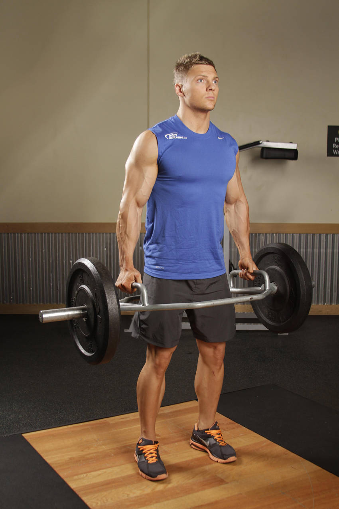

- For this exercise load a trap bar, also known as a hex bar, to an appropriate weight resting on the ground. Stand in the center of the apparatus and grasp both handles.
- Lower your hips, look forward with your head and keep your chest up.
- Begin the movement by driving through the heels and extend your hips and knees. Avoid rounding your back at all times.
- At the completion of the movement, lower the weight back to the ground under control.
This exercise appears in Programmd training programs. Take the quiz to find one for your gym.
Find your program